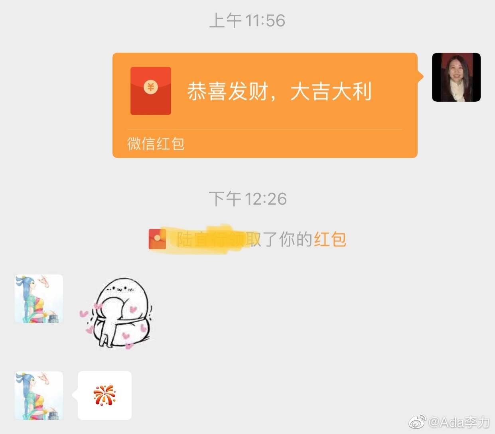

#不明所以# 才知道还有年三十不让女儿在家住的习俗，那个委屈哭诉贴，转发还挺多。我就是觉得，这些旧习俗，它就是坨儿屎。你踩了脚屎，骂骂咧咧几句，或者愤怒在大马路上拉屎的人，才是正常反应，可怎么都为自己委屈了呢？
父母需要教育//@凝碧的波痕:我作为独生女都被我妈拒绝过。我就问她：你一个资深党员还搞封建迷信，我在家住对谁不好？我妈立刻不说话了。现在我就是想在哪就在哪儿，她也不提让我除夕去婆家的事了。@Ada李力:#不明所以# 才知道还有年三十不让女儿在家住的习俗，那个委屈哭诉贴，转发还挺多。我就是觉得，这些旧习俗，它就是坨儿屎。你踩了脚屎，骂骂咧咧几句，或者愤怒在大马路上拉屎的人，才是正常反应，可怎么都为自己委屈了呢？
姣姣看了这个习俗，不懂为何而来。我只给闺女做个总结：中国所有单独为女性设立的旧习俗，都是这种目的 - 干活奉献出钱听话服伺，你女的往前冲，分钱分地分房分利益，你女的往后边站。都是缺德玩意儿。@Ada李力:#不明所以# 才知道还有年三十不让女儿在家住的习俗，那个委屈哭诉贴，转发还挺多。我就是觉得，这些旧习俗，它就是坨儿屎。你踩了脚屎，骂骂咧咧几句，或者愤怒在大马路上拉屎的人，才是正常反应，可怎么都为自己委屈了呢？
#不明所以# 讲个越南的笑话。有人看到越南丈夫一个人背着手在前面走，后面妻子挑着担子带着孩子在后面跟着，问为什么？越南丈夫很淡然地说：传统。后来看到越南丈夫走在后面，还是一个人背着手，妻子还是挑着担子带着孩子，走在前面。又问为什么？越南丈夫说：地雷。
给#姣姣#发了个520元红包，某信这天的最大金额。闺女回的动图，我乍看以为是在做呕，心想：咋了，给你发钱，你还挑对象啊？点开看，才看出是卖萌。闺女开心，我就开心。准备接着给明俊也发一个，他收到了肯定也会开心。想了想，算了。 
回复@斯玛特君:闺女关注的应该是当期电影，我的解释是优秀向来占比低，不加挑选看电影，肯定烂作品多。也是建议她看经典。//@斯玛特君:没有啊，你去看豆瓣8分以上的作品肯定夸得多呀@Ada李力:#姣姣#问我个问题：为什么看到的影评都是挑刺批评居多，一部电影里总有好的地方吧，为什么不多谈谈有收获的方面呢？我胡说了一通，没有说服自己。现在回想这个问题，感觉不如直接回复说：我不知道别人咋想的。